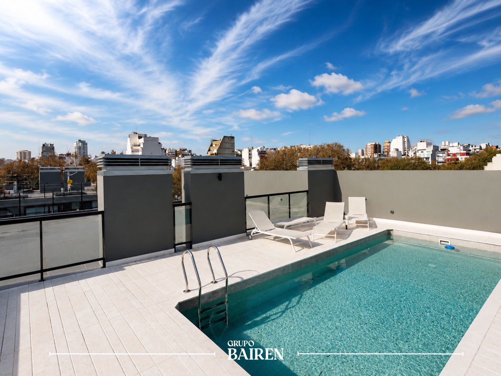
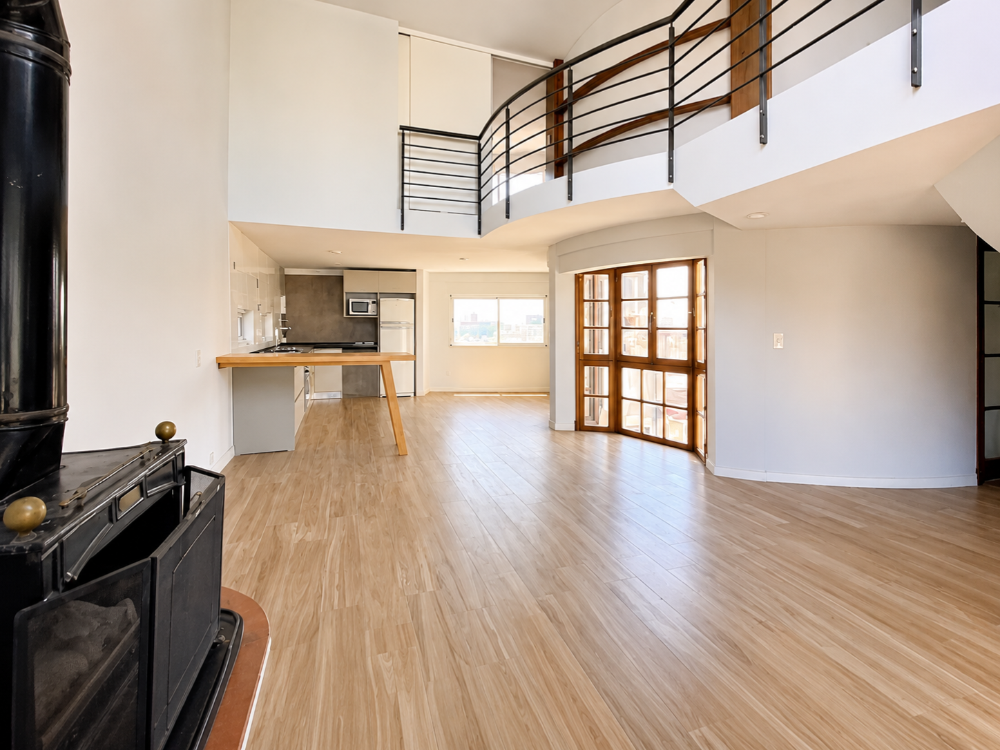
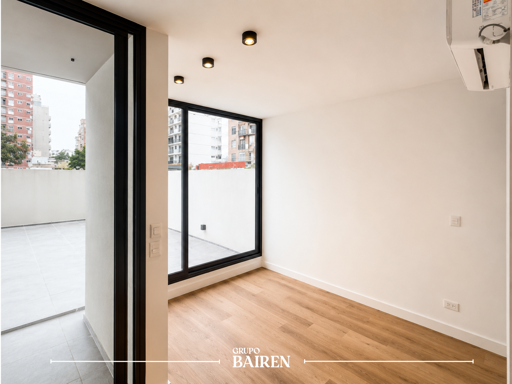

Buenos Aires no se alquila.
Se elige.
Inmobiliaria de selección
Es el documento maestro de BAIREN. Un diseñador, un redactor, un fotógrafo o un sistema de IA deberían poder leerlo solo a él y producir piezas indistinguibles de las que haría el equipo interno.
La regla que ordena todo: si una pieza, tapándole el logo, se lee como casa de lujo lifestyle y no como inmobiliaria, está bien. Si podría aparecer tal cual en un portal, se reescribe.
La categoría que reclamamos, el propósito, los valores y la promesa.
Público, mapa competitivo y los resortes psicológicos que activamos.
Arquetipo, atributos, tono por canal, manifiesto, taglines y léxico.
Tokens reales, sistema actual y evolucionado, logo, tipografía, grilla.
Fotografía, video y las referencias que nos fijan el techo.
Web, redes, ficha, mensajería y pitch a propietarios e inversores.
BAIREN, BAIREN OS y los módulos a futuro sin diluir la marca.
Diez preguntas de control y los riesgos que todavía corremos.
Cada cuadra tiene su luz, su hora, su manera de recibir. Elegir dónde vivir no es leer una lista interminable: es reconocer el lugar cuando aparece.
Por eso no listamos propiedades. Las curamos. Visitamos, medimos, fotografiamos y verificamos cada hogar antes de mostrarlo. Lo que ves es lo que vas a vivir.
Sin garantía. Sin caución. Sin letra chica. Un contrato digital, en dólares, listo en menos de 48 horas.
Una casa, no una inmobiliaria. La forma contemporánea de encontrar dónde vivir en Buenos Aires.
Buenos Aires no se alquila. Se elige.
Lo que somos antes de decir una palabra o mostrar una imagen. Todo lo demás en este manual deriva de acá.
Una inmobiliaria tradicional lista propiedades: cuantas más, mejor. BAIREN elige: cada unidad entra porque pasó un criterio. La categoría se dice sin vueltas; la diferencia está en la práctica, no en el nombre.
El capital cultural no lo aporta el arte, como en una galería, sino el diseño y la tecnología, con la misma gravedad institucional. Eso nos habilita a hablar como una marca de lujo lifestyle y a salir por completo del lenguaje del portal.
En la práctica: la palabra "inmobiliaria" se usa con naturalidad, como Portland dice "desarrolladora". Lo que nos separa del portal no es el nombre de la categoría: es el criterio de selección y cómo se muestra el trabajo.
Donde otros listan propiedades, BAIREN cura hogares.
| Inmobiliaria | Casa BAIREN |
|---|---|
| Lista | Cura |
| Volumen | Criterio |
| Publica | Verifica |
| Vende m² | Entrega un lugar |
| Cliente | Círculo |
Devolverle el criterio a la búsqueda de un hogar.
Ser la primera casa residencial enteramente digital de Argentina, y la infraestructura sobre la que se elige dónde vivir.
Curar, verificar y entregar cada hogar con la precisión de una firma premium y la velocidad de un producto digital.
BAIREN es la casa que cura los hogares de Buenos Aires: no listamos propiedades, elegimos lugares para vivir.
Valores · las cuatro CCuraduría antes que volumen. Si una unidad no cumple el estándar, no entra. Preferimos diez lugares bien elegidos a cien publicados.
Sin letra chica ni sorpresas. El precio es el precio, el contrato es digital y lo que se ve es lo que se vive.
Cada hogar visitado, medido, fotografiado y verificado por el equipo. El cuidado es la forma del respeto, hacia el inquilino y hacia el propietario.
Digital de raíz. En dólares, sin caución, cerrado en horas. La sofisticación de lo clásico con la velocidad de lo nuevo.
A quién le hablamos, contra quién competimos y qué resortes movemos. Apoyado en marketing-psychology.
No segmentamos por edad ni por metros cuadrados, sino por criterio. Quien elige BAIREN valora su tiempo, su tranquilidad y su gusto, y está dispuesto a pagar por que las tres cosas estén cuidadas.
El profesional que se reubica
28 a 45. Ejecutivo, fundador o relocado. Local o extranjero. Llega con poco tiempo y mucha exigencia. Quiere resolver bien y rápido.
La familia en transición
35 a 55. Cambia de etapa: hijos, separación, regreso al país. El hogar es decisión de fondo. Prioriza seguridad, barrio y previsibilidad.
El propietario exigente
Dueño de un activo que quiere rentar sin fricción ni riesgo. Le importa quién entra a su casa y que se la cuiden. Valora la gestión.
| Qué busca | Qué señala al elegirnos | Qué teme | |
|---|---|---|---|
| Profesional | Certeza y velocidad. Cero burocracia. | Que tiene criterio y no pierde el tiempo. | Que la propiedad no sea como las fotos. |
| Familia | Seguridad, barrio, estabilidad. | Que cuida a los suyos y elige bien. | La estafa, la letra chica, equivocarse. |
| Propietario | Renta sin riesgo ni gestión. | Que confía su activo a una casa seria. | El mal inquilino, el daño, el vacío. |
Nadie quiere "alquilar un departamento". Quieren resolver dónde van a vivir sin miedo a equivocarse. Vendemos certeza y criterio, no metros.
Dos ejes. Horizontal: del trámite transaccional a la selección. Vertical: de la marca-persona al sistema. Pinus y Bosch dominan la mitad superior izquierda. Los portales, la inferior izquierda. La esquina de selección hecha sistema digital está vacía. Esa es nuestra.
vs. Portales
Ellos publican todo y no verifican nada. Nosotros curamos y verificamos. Ganamos en confianza y estética, no en cantidad.
vs. Pinus
Tomamos su fuerza audiovisual y su energía aspiracional. Descartamos el culto al fundador: acá la marca es el héroe, no una cara.
vs. Bosch
Tomamos su gravedad y su lógica de selección. Descartamos el peso clásico y la dependencia del arte: somos contemporáneos y digitales.
Activamos seis resortes de decisión, todos de forma ética: ninguno fabrica urgencia. La escasez es real (curado, no listado), nunca inventada. Entre paréntesis, el modelo de marketing-psychology que opera.
| Resorte | Cómo lo activamos | Señal concreta en la marca |
|---|---|---|
| Pertenencia y estatus (Mimetic Desire · Unity) | BAIREN es un círculo de barrios y de gente con criterio. Entrar es pertenecer. | Palermo, Recoleta, Belgrano, Núñez, San Isidro. "Tu lugar", no "una unidad". |
| Prueba social (Bandwagon) | Mostramos tracción real, sin inflar. | 120 propiedades alquiladas · 4,9★ sobre 47 reseñas · testimonios reales. |
| Autoridad (Authority Bias) | El ritual de selección es la credencial. | "Seleccionado, fotografiado y verificado por el equipo de BAIREN." |
| Escasez genuina (Scarcity, ética) | El inventario es chico por definición de selección. No inventamos cuentas regresivas. | "Seleccionado, no listado." La escasez se nombra, no se grita. |
| Aversión al arrepentimiento (Regret Aversion · Loss Aversion) | Quitamos el miedo a equivocarse y la fricción de entrada. | Sin garantía. Sin caución. "Lo que ves es lo que vivís." |
| Pico memorable (Peak-End Rule · Anchoring) | El estándar premium ancla el valor; la entrega es el pico. | Contrato digital firmado en menos de 48 horas. |
Cómo suena BAIREN cuando habla. Perfume de lujo, reloj suizo: frases cortas, lenguaje llano, cero jerga, nada salesy. Apoyado en copywriting.
BAIREN es el que conoce el terreno: el cruce entre el Sabio (conoce) y el Creador (compone), con la gravedad serena del Soberano. La imagen mental es la de un anfitrión culto que conoce cada cuadra de la ciudad y elige, por vos, los pocos lugares que valen la pena.
No es vendedor ni influencer. No grita, no apura, no adula. Muestra, ordena y acompaña. Su autoridad viene del criterio, no del entusiasmo.
"No te muestro todo lo que hay. Te muestro lo que elegiría para mí."
Si una pieza podría decir esa frase sin sonar falsa, está en voz. Si suena a vendedor, no lo está.
| Atributo | Qué significa | Suena así / no así |
|---|---|---|
| Sobrio | Dice lo justo. Una idea por frase. El silencio y el espacio también comunican. | "Dos ambientes en Palermo. Luz de tarde." / "¡Hermoso y luminoso 2 amb!" |
| Preciso | Específico, nunca vago. Datos concretos en vez de adjetivos. | "A tres cuadras de Plaza Las Cañitas." / "Excelente ubicación." |
| Cálido, contenido | Humano y cercano, sin efusividad. Trata de usted al lector cuidándolo, no halagándolo. | "Coordinás la visita cuando quieras." / "¡No te lo pierdas, escribinos YA!" |
| Seguro | Afirma sin alardear. No necesita superlativos porque confía en el lugar. | "Verificado por el equipo." / "La mejor propiedad del mercado." |
Claridad antes que ingenio. Específico antes que vago. Mostrar antes que decir. Si una frase lleva signo de exclamación, sobra el signo o sobra la frase.
La voz no cambia. El tono se ajusta. Misma persona, distinto registro según dónde habla.
| Canal | Registro | Ejemplo en voz |
|---|---|---|
| Web | Editorial, sereno, con aire. Titula con Playfair, respira. | "El departamento que querés. Sin garantía. Sin caución." |
| Instagram / TikTok | Cinematográfico y aspiracional, pero sobrio. Una idea por pieza. | "Palermo, seis de la tarde. La luz entra por el ventanal." |
| Cálido, directo, humano. Primera persona del equipo. Cero plantilla fría. | "Hola, soy Julián de BAIREN. Te preparo tres opciones que encajan." | |
| Ficha | Descriptivo y sensorial. Sustantivos concretos, no adjetivos vacíos. | "Cocina abierta, dos dormitorios, un palier que recibe bien." |
| Contrato | Claro, llano, tranquilizador. Cada cláusula se entiende a la primera. | "Firmás desde tu casa. El depósito se devuelve al cierre." |
| Pausado, de cortesía. Asunto concreto, sin gancho. | "Tres lugares en Belgrano para tu mudanza." |
Versión corta · firma maestra
Buenos Aires no se alquila.
Se elige.
Versión larga (resumen). El texto completo vive en la página de Manifiesto:
"Hay ciudades que se ocupan y ciudades que se eligen. Buenos Aires es de las segundas. Por eso no listamos propiedades: las curamos. Visitamos, medimos, fotografiamos y verificamos cada hogar antes de mostrarlo. Lo que ves es lo que vas a vivir. Sin garantía, sin caución, sin letra chica. Una casa, no una inmobiliaria."
La firma maestra es intocable. El resto rota según pieza y canal. Ninguna lleva signo de exclamación.
Buenos Aires no se alquila. Se elige.
Test: leéla en voz baja. Si suena a confidencia de alguien con criterio, sirve. Si suena a megáfono, no.
Cero emojis comerciales (🔥🏠💰), cero exclamaciones de vendedor, cero "m²" como gancho de titular.
El mismo dato, dos mundos. A la izquierda, el lenguaje que evitamos. A la derecha, cómo lo diría BAIREN.
¡OPORTUNIDAD ÚNICA! Hermoso 2 amb a estrenar 🔥 No te lo pierdas
Dos ambientes en Palermo. Luz de tarde, balcón al frente.
Imperdible. Ideal inversión o vivienda. Excelente ubicación!!!
Para vivir o para rentar. A tres cuadras de Plaza Las Cañitas.
Departamento soñado con todas las comodidades del mercado
Cocina abierta, dos dormitorios, un palier que recibe bien.
Consultá YA, última unidad disponible, se vuela 🏃
Disponible ahora. Coordinás la visita cuando quieras.
Alquiler SIN garantía, súper accesible, el mejor precio
Sin garantía. Sin caución. Contrato digital en menos de 48 horas.
Hermosa propiedad con fotos reales, 100% recomendable
Fotografiado y verificado por el equipo de BAIREN.
Los tokens reales de bairengroup.com, documentados y re-pesados hacia un digital-luxe light-dominante. No se inventan colores: se reorganizan.
Estos son los valores vigentes del sitio. Son la única fuente de verdad de color. No se agregan HEX nuevos: el sistema evoluciona cambiando los pesos, no la paleta.
Navy · estructura y momentos premium
Oro · acento (de relleno a susurro)
Neutros cálidos · la superficie del sistema evolucionado
Neutros de soporte: Silver #BFBAB0 · Silver Light #DDD8CE · Gray Light #D6D2C8. Funcionales: OK #2A7A4B · Error #B94A4A (solo estados de sistema, nunca decorativos).
El sistema actual es navy-dominante con oro de relleno: lee a lujo tradicional. El evolucionado invierte la dominancia hacia la luz y baja el oro a susurro: lee a digital-luxe. El evolucionado es el recomendado.
Sistema actual
El departamento
que querés.
Sistema evolucionado ★ recomendado
El departamento
que querés.
1. Invertir la dominancia. White y off-white cargan la mayoría de la superficie. Navy-deeper queda para hero, footer y momentos premium, no para el 70% de la página.
2. Oro a susurro. Solo hairlines, eyebrows y la flecha. Los CTA pasan a tinta navy. Se elimina el oro como relleno de botón.
3. Conservar intacto. Playfair + Jost, la geometría angular sin border-radius, la curva de movimiento y el sistema de espaciado. Ya son sofisticados.
Marca principal sobre fondo oscuro
El isotipo es el Obelisco porteño trazado en línea fina dorada, contenido en un doble anillo. Es la síntesis de la marca: Buenos Aires (el monumento) dentro de un círculo de pertenencia (la selección). Nunca se rediseña el trazo ni se rellena.
Playfair Display — la voz emocional. Titula, abre y cierra. Cursiva + oro para las frases con alma. Pesos 400 / 500 / 600 / 700 e itálicas.
Jost — la voz funcional. Cuerpo, etiquetas, navegación, datos. Default 300, sube a 500/600 para eyebrows y botones. Mayúsculas con tracking alto.
Movimiento
Una sola curva para todo el sistema: cubic-bezier(0.22, 1, 0.36, 1). Sale rápido y desacelera, nunca rebota.
Grilla y aire
Línea fina, trazo 1.6, extremos redondeados, viewBox 24. Monocromos: gold-dark sobre claro, gold-light o blanco sobre oscuro. Nunca rellenos, nunca multicolor. Contenedor circular de 76px para pasos numerados.

La luz, el encuadre y el ritmo. El techo lo fijan Aesop y Aman, no el portal de al lado.
La foto BAIREN muestra cómo se vive un lugar, no lo inventaría. Luz natural cálida, encuadre arquitectónico con verticales corregidas, balance de blancos consistente. Sin HDR, sin gran angular que deforme, sin saturación de aviso clasificado.

Sí
EstilarA la izquierda, materialidad y luz: en voz. A la derecha, correcta pero vacía: pide un gesto de vida para no leerse como listing.
La firma "GRUPO BAIREN" sobre la foto va sutil: tipografía display, centrada al pie, en blanco al 70% con dos filetes finos a los lados. Nunca grande, nunca opaca, nunca tapando el sujeto. La foto se sostiene sola; la firma solo la acompaña.
Tomamos de Martín Pinus la fuerza del video y la energía aspiracional. Le quitamos el culto al fundador y la épica vendedora. El resultado es contemplativo, no publicitario.
Corte medio de 3 a 5 segundos por plano. El reel respira: prefiere tres planos buenos a diez apurados. La cámara observa, no persigue. Si el video tuviera que justificarse con texto en pantalla gritando, está mal montado.
| Referencia | Qué tomar | Qué descartar |
|---|---|---|
| Martín Pinus @martinpinus_realestate | Ritmo cinematográfico, fuerza del video, energía aspiracional, presencia nativa en redes. | El fundador como cara. La marca es el héroe, no una persona. |
| Miranda Bosch Real Estate & Art | Gravedad institucional, lógica de selección, sensación de círculo y pertenencia. | El arte como muleta y el peso clásico. Somos contemporáneos y digitales. |
| Aesop · Le Labo | Espacio en blanco generoso, copy sobrio y descriptivo, sistema obsesivo. | Lo apotecario y lo retro. Tomamos el método, no la estética de farmacia. |
| Aman · Loro Piana | Lujo callado, materialidad, fotografía editorial, cero urgencia comercial. | El exotismo de resort. BAIREN es urbano y porteño. |
Nota de método: estas directivas se basan en la identidad pública de cada marca (perfiles, web y prensa), recogida en investigación abierta, no en capturas privadas. La identidad de Pinus y Bosch se estudió de sus canales reales.
El sistema puesto a trabajar: web, redes, ficha, mensajería y la sala donde se convence a un propietario.
Web
Aplica el sistema evolucionado: superficie light, navy reservado a hero y footer, oro en hairlines y flechas, CTA en tinta. Playfair titula, Jost sostiene, todo respira con paddings de 120px.
El departamento que querés.
Sin garantía. Sin caución.
Instagram / TikTok
Grilla coherente, no collage. Alterna foto editorial, video contemplativo y placas tipográficas navy con una frase. La bio deja de decir "marketing inmobiliario".
Curaduría residencial en Buenos Aires.
Hogares verificados · contrato digital en USD.
↓ bairengroup.com
"Mientras mirás Zonaprop, alguien ya lo reservó."
"Seleccionado, no listado. Tres lugares nuevos en Belgrano."
Placas tipográficas: navy-deeper, Playfair en blanco, una sola idea, filete de oro. La grilla debe verse como un editorial, no como un clasificado.
Dirección en Playfair, barrio como subtítulo, precio en oro-dark tabular. Descripción sensorial de tres líneas, datos en chips angulares. Una foto estrella manda; el resto, galería ordenada. CTA en tinta: "Coordinar visita".
WhatsApp: humano y firmado por una persona del equipo, sin plantilla fría. Mail: asunto concreto sin gancho, una idea, firma con logo a 40px y la línea "Curaduría residencial · Buenos Aires".
Cada cláusula en lenguaje llano, una idea por párrafo. El tono tranquiliza: "Firmás desde tu casa". La experiencia de firma es un pico de marca, no un trámite.
Julián · Equipo BAIREN
Curaduría residencial · Buenos Aires
+54 11 2310 6629 · contacto@bairengroup.com · bairengroup.com
Al propietario se le habla de cuidado y previsibilidad: "Su propiedad, seleccionada y verificada, frente a inquilinos calificados. Sin garantía que trabe, contrato en horas." El activo está en buenas manos.
Al inversor se le muestra la tesis: el portfolio seleccionado es la prueba de concepto de algo más grande, la infraestructura digital del mercado. BAIREN hoy, BAIREN OS mañana.
Cómo crece BAIREN sin diluirse: la marca madre, la capa de infraestructura y los módulos. Visión, todavía no producto.
BAIREN es hoy la inmobiliaria de selección y su portfolio. Sobre esa prueba de concepto se construyen, a futuro, una capa de infraestructura y módulos especializados. El nombre madre nunca se diluye: las extensiones se nombran desde BAIREN.
BAIREN
La marca madre. Inmobiliaria de selección y su portfolio propio. Es el rostro, la voz y el estándar. Todo lo demás hereda de acá.
BAIREN OS
La capa de infraestructura del mercado: el sistema que digitaliza selección, verificación y contrato. Marca-sistema, sobria, técnica, sin protagonismo sobre la madre.
Módulos · Prop-Pro
Herramientas para actores del mercado (ej. Prop-Pro para profesionales). Nombre funcional, siempre con el sello "by BAIREN". Nunca compiten en jerarquía con la madre.
Reglas de extensión
Expansión LATAM
Diez preguntas de control y, sin filtro, los puntos donde la marca todavía corre riesgo de sonar a inmobiliaria.
Antes de publicar cualquier pieza, pasa por estas diez. Si alguna respuesta es "no", se reescribe o se rehace.
Tapándole el logo, ¿se lee como una casa de lujo lifestyle y no como una inmobiliaria?
¿Está libre de urgencia fabricada, exclamaciones de vendedor y emojis comerciales?
¿Muestra el lugar en vez de adjetivarlo? ¿Hay datos concretos en vez de vaguedades?
¿Ninguna frase podría aparecer tal cual en Zonaprop o Argenprop?
¿La marca es el héroe, sin culto a una persona o fundador?
¿La superficie es light-dominante, con navy reservado y oro en susurro?
¿Tipografía Playfair + Jost, geometría angular, sin border-radius?
¿La foto es editorial y habitada, sin HDR, sin gran angular, sin look de portal?
¿La escasez es real ("curado, no listado") y la prueba social, verdadera?
¿Suena a alguien con criterio hablando bajo, no a un megáfono?
El manual describe el estándar. Hoy, varios activos vivos todavía no lo cumplen. Estos son los focos reales de fuga hacia "inmobiliaria".
El home dice "Inmobiliaria boutique" y el footer "La inmobiliaria digital premium". Choca de frente con el posicionamiento de selección. Mover esos términos a la capa SEO y reescribir el copy visible.
Es el lenguaje exacto que el manual prohíbe en la capa de marca. Reemplazar por "Propiedades seleccionadas en Buenos Aires" y depurar la grilla, hoy despareja.
El post "Mientras mirás Zonaprop, alguien ya lo reservó" es venta dura pura. Es eficaz a corto plazo y tóxico para el posicionamiento. Retirarlo y no repetir el patrón.
Conviven tomas estándar BAIREN (rooftop, loft) con fotos de unidad vacía y balance de blancos frío. Sin una dirección de arte firme, el promedio lee a listing, no a editorial.
En el sitio vivo los CTA siguen en oro pleno: lee a lujo tradicional. La migración a CTA en tinta (sistema evolucionado) está pendiente.
Los testimonios giran alrededor de "Julián". Es cálido y humano, pero si se vuelve la cara de la marca, contradice el "la marca es el héroe". Equilibrar lo humano con lo sistémico.
Buenos Aires no se alquila.
Se elige.
BAIREN · Manual de Marca · 2026
Curaduría residencial · Buenos Aires · bairengroup.com